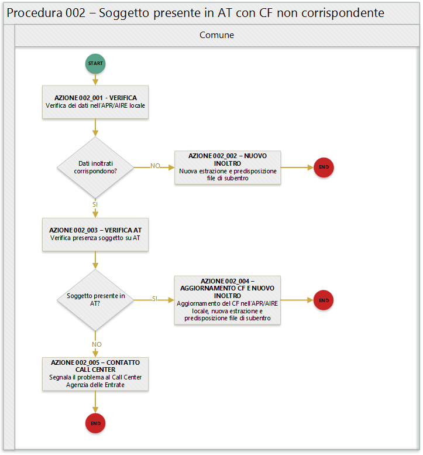

Procedura 002 - Soggetto presente in AT con CF non corrispondente¶
Avvertimento
Il documento è da ritenersi in versione beta.
In quanto segue si riporta la procedura suggerita ai Comuni per la gestione delle anomalie:
- EA002 - Soggetto presente in AT con dati anagrafici uguali a quelli del comune ma CF del comune assente
- EA003 - Soggetto presente in AT con dati anagrafici uguali a quelli del comune ma CF diverso
- EAA40 - Soggetto presente in AT con altri codici fiscali piu’ recenti
- EAA41 - Soggetto presente in AT con altri codici fiscali piu’ recenti
- EAA50 - Codice fiscale base di omocodice
- EAA51 - Codice fiscale base di omocodice
Precondizione¶
Per dare seguito alla presente procedura è necessario che l’ufficiale d’anagrafe disponga:
- accesso al sistema gestionale del Comune (APR o AIRE locale) con diritti di lettura e aggiornamento delle schede soggetto;
- accesso al sistema SIATEL v2.0 - PuntoFisco reso disponibile dall’Agenzia delle Entrate.
Diagramma della procedura¶
La seguente figura sintetizza la procedura per la gestione delle anomalie.
Descrizione azione¶
In quanto segue si riporta una descrizione delle azioni previsti per la presente procedura.
AZIONE 002_001 - VERIFICA¶
L’ufficiale d’anagrafe verifica i dati anagrafici associati al soggetto interessato dall’errore sul sistema gestionale del Comune (APR o AIRE locale) con l’obiettivo di constatare che i dati inoltrati al sistema ANPR coincidono con quelli registrati. Si evidenzia che l’ufficiale di anagrafe provvede anche al riscontro che i dati registrati nell’APR o AIRE locali corrispondano con i dati registrati allo stato civile
AZIONE 002_002 - NUOVO INOLTRO¶
Poichè i dati inoltrati al sistema ANPR non coincidono con quelli presenti nel sistema gestionale del Comune (probabilemente per problemi nella procedura di estrazione e predisposizione dei file di subentro utilizzata) è necessario provvedere nuovamente all’estrazione dei dati e alla predisposizione dei file di subentro al fine di provvedere ad eseguire l’inoltro al sistema ANPR.
AZIONE 002_003 - VERIFICA AT¶
L’ufficiale di anagrafe, tramite il sistema SIATEL v2.0 - PuntoFisco reso disponibile dall’Agenzia delle entrate, ricerca il soggetto nell’Anagrafe Tributaria e verifica il CF ad esso assegnato. Nel dettaglio attraverso le informazioni anagrafiche in suo possesso nome, cognome, sesso, luogo e data di nascita verifica se sull’Anagrafe Tributaria risulta soggetto ed in caso positivo prende nota del codice fiscale attribuito ad esso.
L’azione di verifica del soggetto in Anagrafe Tributaria risulta di estrema criticità in caso di disallineamento tra i dati presenti in essa e quelle presenti nell’APR locale, si suggerisce la consultazione della procededura 000 - Verifica AT.
AZIONE 002_004 - AGGIORNAMENTO CF E NUOVO INOLTRO¶
L’ufficiale di anagrafe, a valle del positivo riscontro con l’Anagrafe Tributaria, provvede ad aggiornare il codice fiscale sul sistema gestionale del Comune per dare seguito ad una nuova estrazione dei dati e alla predisposizione dei file di subentro al fine di provvedere ad eseguire nuovamente l’inoltro al sistema ANPR.
AZIONE 002_005 - CONTATTA CALL CENTER¶
Nel caso in in cui l’ufficiale di anagrafe non riesca ad effettuare il riscontro del CF del soggetto tramite il sistema SIATEL v2.0 - PuntoFisco reso disponibile dall’Agenzia delle entrate, contatta il Call Center dell’Agenzia delle Entrate per segnalare l’anomalia.
Riferimenti di interesse¶
Nello specifico della presente procedure risultano di interesse:
- regole di codifica codice fiscale.